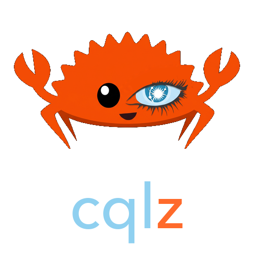

Typesafe CQL.
Written in Rust.
Seven small tools that move mistakes and slowdowns in Cassandra and ScyllaDB queries from production to compile time and CI: typed, checked against current Cassandra, and measured for performance.
Seven tools, one foundation
All of them build on the ScyllaDB Rust driver and cqlc-core, the lexer, parser, schema resolver and type checker that checks every statement.
cqlc
Write .cql schema and named queries. cqlc type-checks them offline against Cassandra 4.0 to 5.0 CQL (vectors, SAI, ANN search) and generates typed async Rust.
Read more →
cqlx
Write a Rust struct. #[derive(CqlEntity)] generates the table, inserts and a type-state query builder that cannot forget a partition key.
Read more →
cql-ai
A 0.6M-parameter Transformer that predicts performance bottlenecks from the statement and your data shape, trained on measured latencies of public workloads.
Read more →
cqlz-gym
Give it entities and a query workload; it designs the Cassandra tables. An exact ILP and a small learned policy search, cqlc-core verifies every candidate.
Read more →
cqlint
A ruff for CQL: formats your files and flags ALLOW FILTERING, tombstone writes, unbounded scans and more. Type-aware with your schema.
Read more →
cql-migrate
Ordered, checksummed, locked schema migrations with offline chain checks, schema diff and live drift detection.
Read more →
cqlprof
EXPLAIN for CQL: runs a SELECT with tracing and tells you about tombstones, sstables, replicas and tail latency.
Read more →
Parsing CQL, on identical statements
One parser under everything
CREATE TABLE